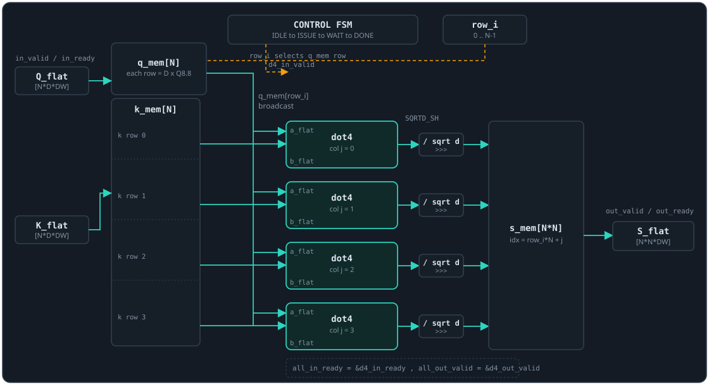

Dev Blog
Notes on building the Attention Accelerator. Each entry leads with the core idea, reasons through the implementation and its cost (compute-bound vs memory-bound), and ends with a takeaway. Newest first.
RTL: what "cost" means once you are on the chip
In Python and CUDA, cost is time. In RTL, cost splits into three knobs you trade against each other: area (how many multipliers), cycles (how many clocks per result), and fmax (how fast the clock can run). A dot product can be one multiplier reused over D cycles, or D multipliers in parallel. I chose the small-area version first.
The datapath: one multiplier, D cycles
The atom inside QK⊤ is dot4: a dot product of two length-D Q8.8 vectors. Rather than D parallel multipliers, a four-state FSM (IDLE, LOAD, MAC, DONE) walks a single signed multiplier across the vector, one product per MAC cycle. Q8.8 × Q8.8 is a Q16.16 product, so I accumulate the raw Q16.16 in a wide 40-bit register for headroom, then shift back to Q8.8 and saturate exactly once at the end. The shift is arithmetic (>>>) so the sign survives, and the clamp stops an overflow from wrapping silently.
acc <= acc + (a_reg[idx_counter] * b_reg[idx_counter]); // Q16.16 into wide acc
assign shifted = acc >>> FRAC; // Q16.16 -> Q8.8, keep the sign bit
if (shifted > sMAX) s = sMAX; // clamp high
else if (shifted < sMIN) s = sMIN; // clamp low
else s = shifted[DW-1:0]; // in rangeThe interface is the point
Every module carries a valid/ready handshake, decoded straight from the FSM state: accept only in IDLE, result valid only in DONE. This is not incidental. Valid/ready is AXI4-Stream, so these blocks compose into a streaming datapath later without rework.
assign in_ready = (curr_state == IDLE);
assign out_valid = (curr_state == DONE);The testbench drives known vectors through the full handshake and checks basic, signed, and saturating cases: [1,2,3,4]·[1,1,1,1]=10 -> 2560, a signed dot to 1024, and an overflow that clamps to 32767. All three pass. The QK⊤ engine on top instantiates four dot4 units in parallel, one per column: the same query row is broadcast to all four while each pairs it with a different key row, so a full score row lands every pass and the matrix takes N passes instead of N×N. Each result is scaled by 1/√d with a right shift (the dims are powers of two). That controller is what I am wiring now.

Four dot4 units in parallel trade area for throughput: a full score row is computed per pass, so the engine runs in about N passes rather than N². That is 4x the multipliers for 4x the row throughput versus one time-multiplexed unit, which stays the smaller-area fallback.
Performance (to measure)
Expectation: a small, high-fmax core whose latency is dominated by the serial MAC. Throughput is set by cycles-per-score times the clock period; unrolling multipliers later trades area for fewer cycles.
| Metric | How it is measured | Value |
|---|---|---|
| Cycles per score / full QK⊤ | XSim cycle count from the waveform | TBD |
| Latency (ns) | cycles × clock period | [to measure] |
| fmax (MHz) | Vivado timing report (worst-case slack) | TBD |
| Throughput (scores/s) | fmax / cycles-per-score | (pending) |
| Area (LUT / FF / DSP) | Vivado utilization report | TBD |
Tiling is an arithmetic-intensity play
Attention at scale is memory-bound: it moves far more bytes than it does FLOPs. The tiled kernel does not change a single arithmetic operation. It changes where the data lives during compute, which raises arithmetic intensity (FLOPs per byte read from global memory) and slides the kernel toward the compute roof.
Count the bytes, not the FLOPs
At N = d = d_v = 4 with no caching, the naive kernel has each of N threads read all of Q, K and V. Each tensor is read N·N·D = 64 times, so 192 global reads, against only 3·16 = 48 distinct elements. That is 4× redundancy, which is exactly N: every key and value row is re-fetched once per query. The FLOP count is unchanged, so intensity is 4× lower than it needs to be, and global memory (~400 to 600 cycles) is the wall.
naive: Q,K,V each read N*N*D = 64 -> 192 reads + 16 writes
distinct input elements = 3 * 16 = 48
redundancy = 192 / 48 = 4x (= N)Tiling loads those 48 elements into on-chip shared memory (~20 to 30 cycles) once, then every thread reuses them. As N grows, the naive N² traffic terms collapse toward N, and the win grows with the problem.
The one new hazard
Cooperative load has thread i copy row i into the shared tiles; then a block-wide __syncthreads() barrier; then the guarded compute. Every thread must reach every barrier, so you never return before one.
if (i < N) { // cooperative load: thread i loads row i
for (int k = 0; k < D; k++) sQ[i*D + k] = Q[i*D + k];
/* sK, sV likewise */
}
__syncthreads(); // ALL threads reach this - never return before it
if (i < N) { /* compute from sQ/sK/sV, then write O */ }Guard the work, not the barrier. Result: max abs err 1.192093e-07, bit-identical to the naive kernel. Same math, different data path, which is exactly the point: tiling is a memory optimization, so correctness must not move.
Performance (to measure)
Expectation: at N=4 the whole problem fits in registers, so tiling is not faster here; the speedup is a large-N effect and should track the drop in redundant global reads.
| Metric | How it is measured | Value |
|---|---|---|
| Kernel latency (ms) | cudaEvent timers around the launch | TBD |
| Speedup vs M3 naive | latency ratio at matched N | [to measure] |
| Achieved memory bandwidth | bytes moved / kernel time, vs peak (roofline) | (pending) |
| Arithmetic intensity (FLOP/byte) | FLOPs / global bytes read | TBD |
CUDA naive: isolate one variable at a time
Moving to the GPU adds two new ways to be wrong: parallelism and precision. Never debug both at once. I kept the math in float32 so the only question this kernel answers is did I parallelize correctly?. Quantization is already validated separately in M2.
A byte-exact data bridge
My dev machine (M1 Mac) has no nvcc, so I write the .cu here and run it on a GPU box. C++ rand cannot reproduce NumPy, so I export Q, K, V and the golden O as .npy and load those. Casting to float32 before saving means both sides read identical bytes; any diff is the kernel's fault, never a silent truncation. The cost is a fixed error floor, since the golden is float64 cast to float32.
The bug that taught the most
A .npy file is magic + version + a 2-byte header length + an ASCII header + raw data. The header length is already a byte count, but I first wrote fseek(f, 2*hdr_len, ...) and ran past EOF. Seeking past EOF is silently legal and returns 0; nothing complains until the later fread comes up short. Checking fread's return is the only witness that it failed.
fseek(f, 8, SEEK_SET); // skip magic (6B) + version (2B)
fread(&hdr_len, sizeof(uint16_t), 1, f); // header length, in bytes
fseek(f, hdr_len, SEEK_CUR); // NOT 2*hdr_len - already a byte count
size_t got = fread(data, sizeof(float), rows*cols, f);
if ((size_t)(rows*cols) != got) { /* fread's return is the only witness */ }One thread per output row
Thread i owns row i: dot products for the scores, subtract the row max for stability, exp and sum, normalize, then the PV blend. The launch is async and returns void, so config errors need cudaGetLastError() and runtime errors need cudaDeviceSynchronize(), checked before the copy back.
int i = blockIdx.x * blockDim.x + threadIdx.x;
if (i >= N) return; // one thread per output row
for (int j = 0; j < N; j++) { // scores: dot(Q[i],K[j]) / sqrt(D)
float dot = 0.0f;
for (int k = 0; k < D; k++) dot += Q[i*D + k] * K[j*D + k];
s[j] = dot / sqrtf((float) D);
}
// row-max -> expf -> sum -> normalize -> PV into O[i*DV + c]
attention_kernel<<<numBlocks, threadsPerBlock>>>(dQ, dK, dV, dO);
CUDA_CHECK(cudaGetLastError()); // launch-config error
CUDA_CHECK(cudaDeviceSynchronize()); // runtime error + barrier before D2HMax abs err 1.192093e-07, exactly float32 machine epsilon (2-23), the theoretical floor against an f64-then-f32 golden. When you hit the precision floor, the kernel is correct and there is nothing left to chase.
Performance (to measure)
Expectation: at these dims the kernel is memory-bound and latency-dominated, so raw numbers are mostly a baseline for the tiled version to beat at larger N.
| Metric | How it is measured | Value |
|---|---|---|
| Kernel latency (ms) | cudaEvent timers around the launch | TBD |
| Effective throughput (GFLOP/s) | attention FLOPs / kernel time | [to measure] |
| Occupancy | Nsight Compute (warps active / max) | (pending) |
Fixed-point: price the accuracy before building the hardware
An FPGA does integer math, not floating point. The question to answer before writing HDL is: how much accuracy does that cost? Answering it in Python, where a print statement is free, turns a vague worry into a concrete error budget.
The grid, and the one rule
Q8.8 means a real number times SCALE = 28 = 256, stored as a signed 16-bit integer. The rule the whole file lives on: multiplying two Q8.8 values doubles the fraction bits to Q16.16, so after each integer matmul I divide the accumulator by SCALE² to get back to a real value. Quantize saturates internally so a large value can never wrap silently.
def quantize(x):
return saturate(np.round(x * SCALE).astype(int)) # clamp before storing
Qq, Kq = quantize(Q), quantize(K)
S_raw = Qq @ Kq.T # integer matmul -> Q16.16
S_fixed = (S_raw / (SCALE * SCALE)) / np.sqrt(d) # /SCALE^2, then /sqrt(d)Only QK⊤ and PV are truly on the grid here. Softmax's exp stays in float, because a fixed-point exp is a lookup table that mirrors a future RTL stage; scoping it out keeps one thing on the grid at a time.
The failure the grid forces
Quantizing a perfectly normalized softmax row breaks its normalization: the tiny probabilities round onto the lattice and the errors do not cancel.
Pq row sums (Q8.8): [256, 257, 255, 256] // should all be 256 = 1.0At N=4 that is only about 1/256, but you sum N of these, so at N=128 it compounds. The fix is more fraction bits or an explicit renormalization stage, which is now a known line item for the RTL.
Max abs error 0.00631 (~0.6%), mean 0.00205. That is the budget the CUDA and RTL versions are held to. Surfacing the normalization break in Python, not on the FPGA, is the entire value of this level.
Performance (to measure)
Expectation: pure-Python integer emulation, so latency is irrelevant in absolute terms; the point of this level is the error budget above, not speed.
| Metric | How it is measured | Value |
|---|---|---|
| Latency per forward pass | Python timeit | TBD |
| Max / mean abs error vs golden | diff against M1 (measured) | 0.00631 / 0.00205 |
Start from an oracle you can trust
You cannot measure error without a reference. Before any optimization, build a float64 model that is obviously correct and self-checking, at dimensions small enough to verify by hand. Every lower level is then diffed against it.
Seed, dims, and the three operations
Attention is three steps: scores, softmax, blend. A fixed seed makes the inputs identical on every run and in every downstream version, so a later mismatch is always a real bug, never input drift. Tiny dims (N = d = d_v = 4) keep it hand-checkable.
np.random.seed(0) # fixed inputs = unambiguous oracle
N, d, d_v = 4, 4, 4
Q, K, V = np.random.randn(N, d), np.random.randn(N, d), np.random.randn(N, d_v)
S = Q @ K.T / np.sqrt(d) # (N,d).(d,N) -> (N,N), contracts feature dim dTwo details that bite everywhere later
Subtracting the row max before exp is mathematically identical to plain softmax but prevents overflow; this is exactly why a row_max engine will exist in the RTL. And keepdims=True keeps the reductions as (N,1) so they broadcast down rows; drop it and you get a silently-wrong result with no crash.
max_ = np.max(S, axis=1, keepdims=True) # (N,1)
exp_ = np.exp(S - max_) # stable
P = exp_ / np.sum(exp_, axis=1, keepdims=True)
O = P @ V # PV needs no transpose
assert np.allclose(P.sum(axis=1), 1.0) # first test in the projectA self-checking reference with a fixed seed is the cheapest verification you will ever write, and it makes every later level falsifiable. The assert is the whole point: wrong axis or missing normalization dies immediately.
Performance (to measure)
Expectation: this is the correctness oracle, not a speed target. The latency number exists only as the top of the ladder the CUDA and RTL versions are compared against.
| Metric | How it is measured | Value |
|---|---|---|
| Latency per forward pass | Python timeit | TBD |
| Self-check (softmax rows sum to 1) | assert np.allclose(...) | PASS |